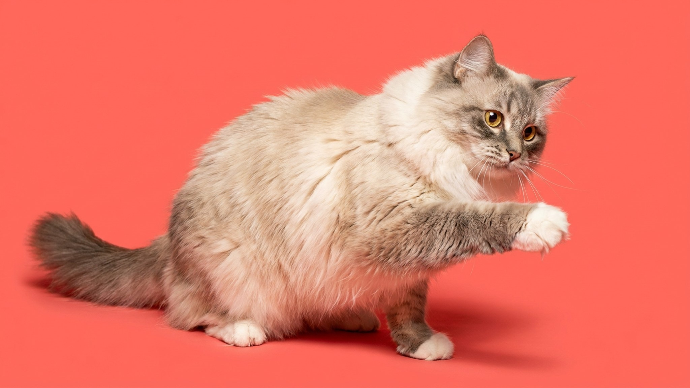

Возьмите рагамаффина на руки — и он буквально обмякнет, как мешок с тёплым песком. Эта порода не напрягается, не сопротивляется и не ищет выхода из объятий. Рагамаффин — не рэгдолл, хотя их часто путают. Отдельная порода с собственной историей, характером и одной особенностью, которая делает самовыгул для неё по-настоящему опасным.
🐾 Питомец ведёт себя странно?
AnimaLife расшифрует поведение кошки и собаки и подскажет, что делать. Попробуйте бесплатно прямо в мессенджере.
Рагамаффин — это кот-компаньон в самом прямом смысле. Он не просто терпит присутствие человека, он ищет контакт. Идёт за хозяином из комнаты в комнату, ждёт у двери, укладывается рядом — не на хозяина, а именно рядом, чтобы чувствовать тепло.
Порода не склонна к агрессии даже в стрессовых ситуациях. Рагамаффин не кусается и не царапается в ответ на неловкое обращение, что делает его хорошим выбором для семей с детьми. Важно: именно эта черта — отсутствие защитных реакций — превращает самовыгул в риск.
Рагамаффин хорошо уживается с другими кошками и со спокойными собаками. Он не доминирует и не отстаивает территорию агрессивно — просто занимает понравившееся место и остаётся там. Одиночество переносит хуже, чем большинство кошек: если хозяин подолгу отсутствует дома, породе нужен второй питомец-компаньон.
Рагамаффин — одна из самых крупных домашних пород. Коты весят 7–9 кг, кошки — 4–6 кг. При этом порода взрослеет медленно: полного физического и эмоционального развития рагамаффин достигает только к 3–4 годам. До этого возраста кот остаётся котёнком по поведению — игривым, немного неловким, импульсивным.
Это важно учитывать при покупке: ждать «взрослого» характера придётся дольше, чем у большинства других пород. Зато когда взросление завершается, темперамент становится очень стабильным.
Шерсть рагамаффина — полудлинная, мягкая, почти не склонная к колтунам благодаря особой текстуре. Это одно из преимуществ породы перед персами или мейн-кунами. Базовый уход несложный:
Рагамаффин не понимает угрозы. У этой породы практически отсутствует защитная настороженность: кот подойдёт к незнакомому человеку, к собаке, к чужому животному без малейшей осторожности. На улице это опасно: кот не убежит, не спрячется, не защитится. Он просто останется стоять.
Порода создавалась исключительно как домашняя. Выпускать рагамаффина на самовыгул — значит рисковать его безопасностью без всякой необходимости. Если хочется прогулок — только на шлейке под контролем, в безопасном месте.
Шлейку рагамаффины принимают спокойно, особенно если приучить с котёнка. Это хорошая альтернатива: кот получает новые впечатления и запахи, хозяин контролирует ситуацию. Многие владельцы описывают прогулки с рагамаффином как полностью расслабленные — кот никуда не рвётся и не паникует.
🐾 Здоровье питомца под контролем
AI-ветеринар, дневник здоровья и персональные советы для вашего питомца — установите AnimaLife бесплатно.
🐾 Понравился разбор?
Подпишитесь на канал — каждый день разбираем по одному тревожному симптому у кошек и собак: что в пределах нормы, а когда пора к врачу. Подпишитесь, чтобы не пропустить разбор, который может спасти здоровье вашего питомца.
Материал носит информационный характер и не заменяет очную консультацию ветеринара.